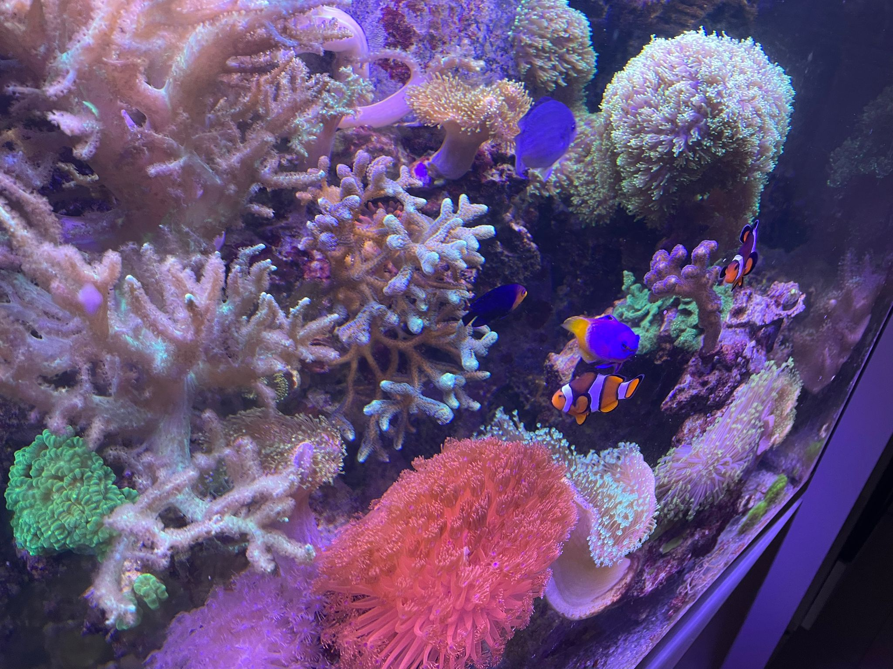
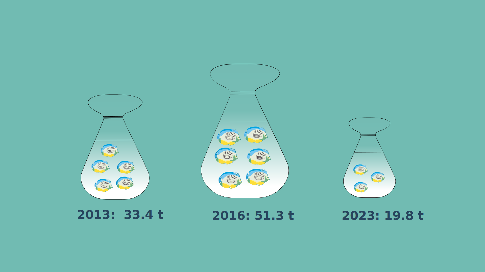

The wild capture of fish for marine aquariums poses a threat to the marine ecosphere. Among aquarists in Germany, the purchase of such fish and corals has therefore increasingly fallen into disrepute. But has the number of imports actually decreased?
Picture Source: Kellie Churchman, CC0, via Wikimedia Commons
Talking about saltwater aquariums, most people think of “Finding Nemo”. A clownfish father and son, mercilessly separated by a diver who catches little Nemo from the sea. The fish is locked in a dentist's aquarium, at the mercy of its owner and his nasty niece.
But there are not only emotional, but also rational arguments against keeping sea fish in aquariums: The animals have to travel long distances on ships or airplanes. This is not only harmful to the environment, but also extremely deadly. Scientists estimate that up to 80 percent of the fishes die during transportation. Even after arriving in the aquarium, quite a few of the animals are so stressed that they pass away within the first few weeks.
Not without good reason, having a saltwater aquarium was long regarded as an "ecological sin".
Wild-caught fish have fallen into discredit
In recent years, however, the scene has experienced a sustainability trend. Hobby aquarists are engaging extensively with marine biology and are actively concerned about dying coral reefs. They read expert literature to find out which fish can be kept in aquariums in a species-appropriate way and study their movement and social behavior. They follow with interest the work of scientists who want to reforest the reefs in the sea with corals bred in aquariums. And: they avoid putting fish and corals in their aquariums that are caught in the oceans. New successes in breeding now make it possible to buy many popular species - such as clownfish - from captive-bred stock.
Thanks to my partner, who has been a big seawater enthusiast since childhood, I also have an aquarium at home: a tank that is equipped with energy-efficient lamps and in which we only put selected, small fish that need little space and are highly socially compatible. We breed corals and swap them with friends - just like others do with plant cuttings. Based on this personal experience, I would assume that fewer wild-caught fish are being bought for aquariums, at least in Germany.

This is my aquarium back home. Source: Private
But is that true?
The "Statistisches Bundesamt" is a German authority that collects figures on foreign trade. The value and weight of almost 15,000 products imported into Germany are recorded every year - including “live ornamental marine fish”. The data thus reveals the development of imports of marine aquarium fishes to Germany.
In fact, the number of imports of „live ornamental marine fish“ to Germany has decreased in recent years: After an increase from 2,870 thousand US dollars value in 2013 to 3,684 thousand US dollars in 2016, the value has dropped in almost all subsequent years. The level is now well below that of 2013.
Still, this does not prove a causal link that aquariums have become more sustainable. For example, it is also possible that it reflects how many Germans are persuing that hobby. The increase in 2021 may be an effect of the Covid crisis, where people have isolated themselves in their homes and looked for new hobbies. Meanwhile, the drop in 2022 could have been caused by the Russian invasion in Ukraine. Electricity prices in Germany rose signifciantly after that - which may be why some people sold their aquariums.
A look at the total weight of imported "live ornamental marine fish" reveals a similar trend. The peak here was reached one year earlier, in 2016. In 2023, the total weight was around 40 percent lower than in 2013.

At the same time, the total weight of live imported marine ornamental fish is still enormous - be aware it is recorded in tons. According to earlier studies, the vast majority of aquarium fishes are wild caughts.
So even though there was a decline of imports in Germany, this does not mean that the sustainability problems are solved.
In addition, also ethical questions around the import of maritime fishes arise. Many come from countries with a low GDP. The map shows the sources of the imported sea fish. Unfortunately, the statistics do not distinguish between traders of origin and intermediaries - which could explain the high imports from countries like the Netherlands and Portugal, where large seaports are located.
Some argue that fishermen in lower-income countries are dependent on wild catches for aquariums - which, according to reports, bring in significantly more money than fish intended for consumption. At the same time, the fishermen there work under harsh conditions. Very little of the often high prices of seawater fish in western countries is likely to reach them.
It is doubtful whether an aquarium can ever really be run sustainably. But the general trend towards greater sustainability and the reduced number of wild-caught fish for aquariums in Germany is at least a positive development.